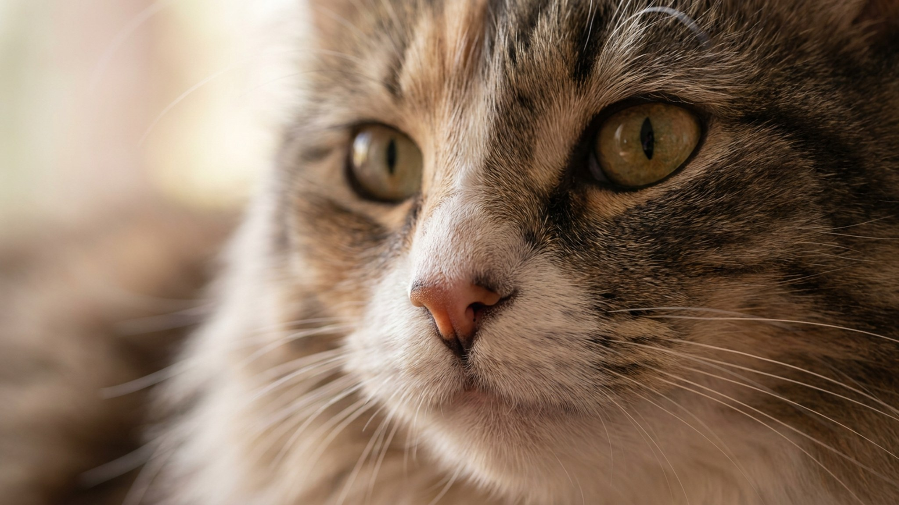

Весной хозяева норвежской лесной кошки снимают шерсть буквально со всего — с одежды, дивана, собственного кофе. Это нормально: порода сбрасывает подшёрсток плотными комьями, и если не вычёсывать ежедневно, через неделю за ушами уже колтун. Хорошая новость — шуба норвежской лесной кошки устроена так, что при правильном груминге почти не требует мытья и держит форму сама. Ниже — конкретно: инструменты, частота, проблемные зоны и что делать в период линьки.
🐾 Дневник здоровья питомца — в кармане
Вес, прививки, симптомы и напоминания в одном приложении. AnimaLife следит за здоровьем питомца вместо вас.
Норвежская лесная кошка — порода, сформировавшаяся в суровом скандинавском климате. Её шерсть состоит из двух слоёв: длинный водоотталкивающий остевой волос не пропускает влагу снаружи, а плотный мягкий подшёрсток удерживает тепло. Именно эта комбинация делает шубу практически самоочищающейся в сухих условиях — грязь и мелкие частицы просто скатываются с ости.
Частое мытьё разрушает водозащитные свойства: шампунь смывает природные масла, остевой волос теряет упругость, и шуба начинает «впитывать» воду вместо того, чтобы её отталкивать. Норвежскую лесную кошку моют редко — только если кошка сильно испачкалась или по медицинским показаниям.
В обычное время достаточно 1–2 раз в неделю. В период линьки — ежедневно, иначе выпавший подшёрсток сваливается в колтуны быстрее, чем кажется.
Начинайте с менее чувствительных зон — спины и боков — и заканчивайте зонами риска. Движение гребня — по росту шерсти, без давления.
У норвежской лесной кошки есть четыре места, которые требуют особого внимания при каждом расчёсывании:
Если колтун небольшой — распутайте пальцами у основания, затем пройдитесь гребнем. Крупный и плотный колтун лучше срезать колтунорезом, чем тянуть: боль от рывка отбивает у кошки желание терпеть груминг надолго.
Норвежская лесная кошка меняет подшёрсток интенсивно весной — порода реагирует на световой день острее большинства домашних кошек. Линька длится 3–6 недель и идёт волнами: сначала живот и бока, потом воротник и «штанишки». В этот период подшёрсток выходит комьями, и ежедневный гребень — не роскошь, а необходимость.
Стрижка машинкой во время или после линьки — плохая идея. Остевой волос растёт медленно, и пока он не восстановится, кошка теряет защиту от влаги и перепадов температуры. Если шубу запустили до состояния сплошного колтуна — обратитесь к груммеру, он безопаснее расправится с проблемными участками без стресса для кошки.
Качество шерсти зависит и от рациона: омега-3 жирные кислоты поддерживают блеск и эластичность волоса. Конкретный рацион и добавки лучше обсудить с ветеринаром — под вашу кошку и её возраст.
Норвежскую лесную кошку, которую начали расчёсывать с 2–3 месяцев, расчёсывать взрослой — удовольствие. Кошку, которую впервые взяли в руки с гребнем в год, — испытание для обоих. Котёнку достаточно 2–3 минут с мягкой щёткой после игры, пока он расслаблен. Постепенно добавляйте инструменты и зоны, заканчивайте сеанс чем-то приятным.
Груминг — это уход, но иногда за изменением шерсти стоит не сезон, а здоровье:
Это уже не вопрос груминга — это повод для осмотра.
🐾 Не уверены, что это опасно?
Опишите симптом в AnimaLife — AI-ветеринар за минуту подскажет, что в пределах нормы, а когда пора к врачу.
🐾 Понравился разбор?
Подпишитесь на канал — каждый день разбираем по одному тревожному симптому у кошек и собак: что в пределах нормы, а когда пора к врачу. Подпишитесь, чтобы не пропустить разбор, который может спасти здоровье вашего питомца.